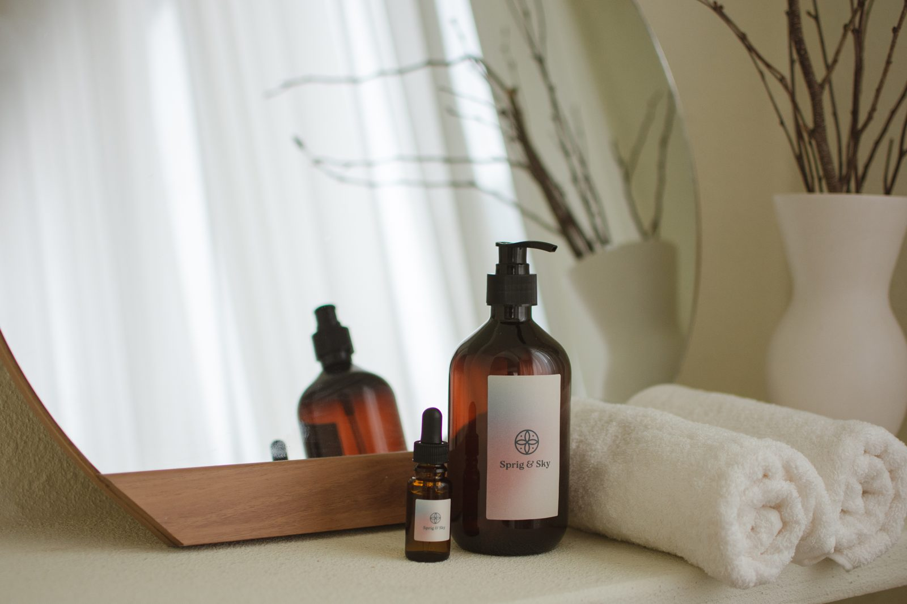
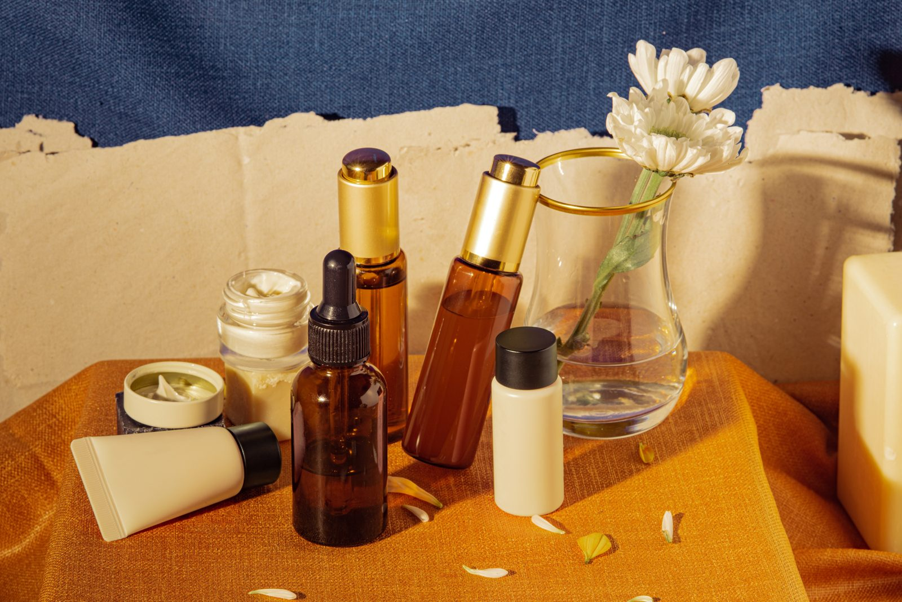

Because your skin comes first.
Simple, affordable skincare for the woman who looks after everyone else. No 10-step routines. Just the essentials, and a little time that is yours.
Shop the EssentialsBAE = Before Anybody Else.
Many women spend their days caring for family, partners, children and work, while their own needs wait at the end of the list. BAE MINIMUM asks you to put yourself first, not selfishly, but intentionally.
Sometimes, giving yourself the bare minimum is the minimum you deserve.
Read our story
Start with the basics
A simple skincare routine does not need to be complicated. BAE MINIMUM is built around choosing a few familiar steps and making them fit your real life, rather than chasing every new trend.
Morning
Keep it practical: cleanse if needed, moisturise, and use a suitable sunscreen according to its label.
Evening
Remove the day, cleanse gently, and moisturise. Add another step only if it suits your needs and routine.
Make it yours
Skin needs vary. Introduce products thoughtfully, check ingredient labels, and stop using anything that causes irritation.
BAE MINIMUM is a student project concept. Products shown on this site are illustrative and are not for sale.
A small shelf, thoughtfully chosen.
Illustrative sample products for a minimal routine.

Less routine. More care.
Self-care should fit your day, not become another task on it.
Simple
A few steps you can actually keep.
Affordable
Priced for a first salary or a student budget.
Intentional
Essentials over excess.
"I care for everyone else. I deserve some care too."
BAE MINIMUM began as a college project built around one simple idea: self-care is not selfish.
Meet the team